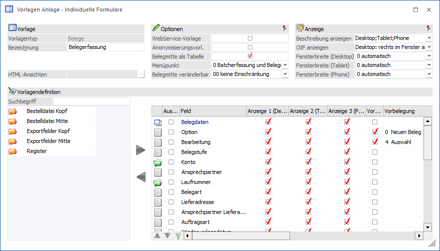
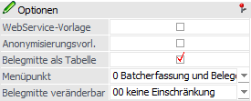
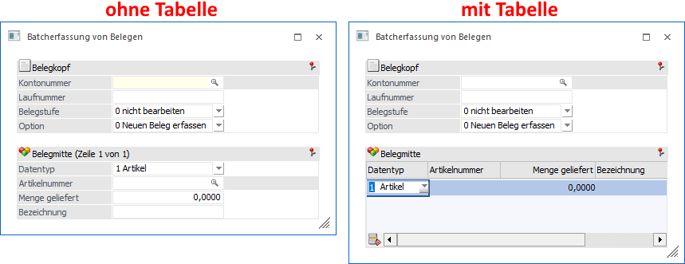
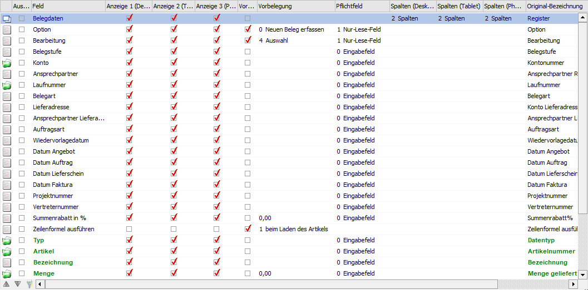
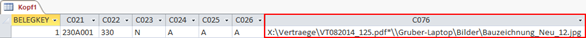
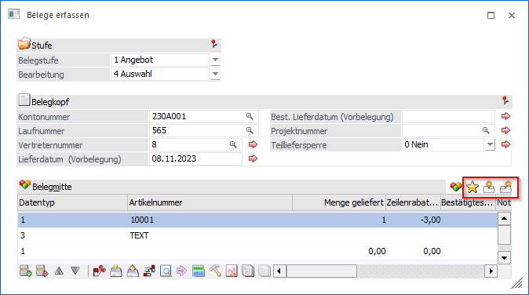
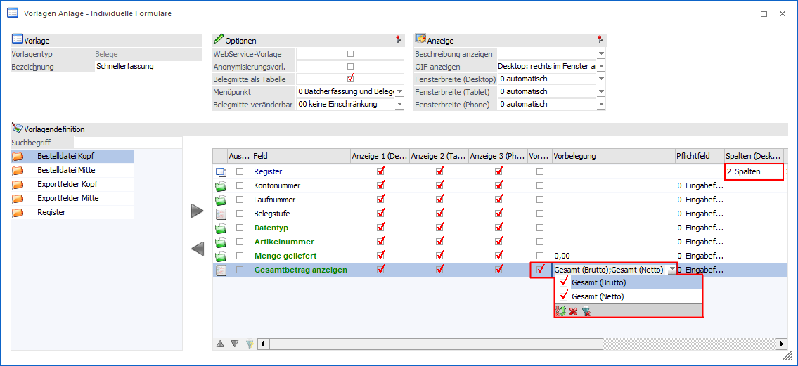
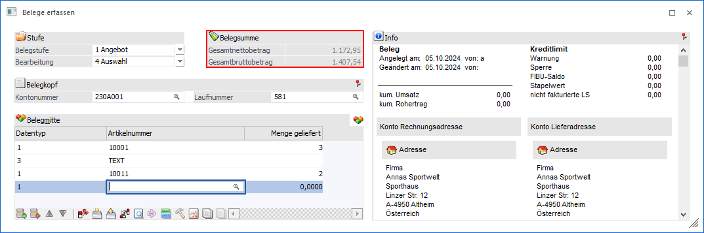

Vorlagen des Typs "Bewegungsdaten - Belege"
Grundsätzlich unterscheidet sich die Anlage von Vorlagen des Typs "Belege" nicht von der Anlage anderer Typen. Aus diesem Grund werden in diesem Kapitel nur die Spezial- bzw. Sonderfunktionen beschrieben.

Optionen

Ø WebService-Vorlage
Wenn diese Checkbox aktiviert wird, so kann die Vorlage beim Export/Import mit Webservices verwendet werden. Zusätzlich kann die Vorlage auch in den EXIM-Fenstern (EXIM Stammdaten, Buchungsstapel-EXIM, Batchbeleg) mit ODBC-Treiberoption "97 XML (Webservice)" verwendet werden. Darüber hinaus kann eine so definierte Vorlage auch im "HTML-Editor" eingebunden werden.
Ø Anonymisierungsvorlage
Wenn dieser Option aktiviert ist, dann kann die Vorlage auch für Anonymisierungsvorgänge verwendet werden (siehe auch Kapitel "Anonymisierung").
Ø Belegmitte als Tabelle
Diese Option kann nur dann gesetzt werden, wenn es sich um eine individuelle Vorlage für "Belege" handelt. Hiermit wird gesteuert, ob die Eingabefelder der Belegmitte als eigenständige Eingabefelder oder ob alle definierten Felder der Belegmitte als Tabelle dargestellt werden sollen.
Achtung
Nur wenn die Belegmitte als Tabelle dargestellt werden soll, kann die Vorlage im Programm "Belege erfassen", "Barrechnungen" und "Fertigung" genutzt werden. Im Programm "Batcherfassung von Belegen" können Vorlagen mit und ohne "Belegmitte als Tabelle" verwendet werden.
Beispiel - Batcherfassung von Belegen

Ø Menüpunkt
Mit Hilfe dieser Auswahl kann definiert werden, in welchen Menüpunkten der Belegerfassung die Vorlage genutzt werden soll:
ü 0 - Batcherfassung und Beleg
erfassen
Die Vorlage steht in den Menüpunkten "Belege erfassen" (wenn
zusätzlich die Option "Belegmitte als Tabelle" aktiviert ist) und
"Batcherfassung von Belegen" zur Verfügung.
ü 1 - Barrechnungen
Bei Auswahl
von "1 - Barrechnung" kann die Vorlage in der WinLine KASSE bzw. in der WinLine
FAKT KASSE im Menüpunkt "Barrechnungen" verwendet werden. Zusätzlich steht sie
im "Belege erfassen" und "Batcherfassung von Belegen" zur Verfügung.
ü 2 - Fertigungsstückliste
Bei
Auswahl von "2 - Fertigungsstückliste" kann die Vorlage im Menüpunkt "Fertigung"
verwendet werden. Zusätzlich steht sie im "Belege erfassen" und "Batcherfassung
von Belegen" zur Verfügung.
Ø Belegmitte veränderbar
Diese Option steht nur bei individuellen Formularen des Vorlagentyps "Belege" zur Verfügung. Hierüber kann per Berechtigungsvergabe definiert werden, ob während der Belegerfassung über die rechte Maustaste (Funktion "Spalten anzeigen / verstecken") Spalten hinzugefügt bzw. entfernt werden dürfen.
Tabelle "Datenfelder der Vorlage"

Die Definition der Felder erfolgt wie bei allen anderen Vorlagen auch. Allerdings stehen diverse Sonderfelder und -funktionen zur Verfügung.
Ø Spalte "Anzeige"
Hier wird festgelegt, ob das Feld im individuellen Formular angezeigt werden soll. Wird ein Feld angezeigt, muss beachtet werden, dass eine eventuelle Automatik wegfällt. Lässt man zum Beispiel das Feld "Laufnummer" anzeigen (Vorlage wird im Programm "Batcherfassung von Belegen" genutzt), wird dort standardmäßig nicht die nächste Nummer angezeigt, wie in der Standardbelegerfassung. Hier wird dann erst beim Speichern die nächste freie Nummer verwendet, falls die erfasste Laufnummer bereits vergeben ist.
Ø Spalte "Vorbelegen" (nur bei individuellen Formularen)
An dieser Stelle kann für dieses Feld eine Vorbelegung aktiviert werden.
Ø Spalte "Vorbelegung" (nur bei individuellen Formularen)
Wurde die Spalte "Vorbelegen" aktiviert, kann hier die entsprechende Vorbelegung hinterlegt werden (weitere Informationen entnehme Sie bitte dem Feld "Vorbelegung übernehmen (nur bei individuellen Formularen)").
Ø Spalte "Pflichtfeld" (nur bei individuellen Formularen)
Hier kann definiert werden, ob es sich um ein reines Eingabefeld oder um ein Pflichtfeld handelt. Dieser Feldtyp kann nur geändert werden, wenn die Anzeige für dieses Feld aktiviert ist. Grün dargestellte Felder müssen darüber hinaus ohnehin erfasst oder vorbelegt werden, unabhängig von der Einstellung im Pflichtfeld.
Hinweis
Die Pflichtfeld-Einstellung wird für Felder der Belegmitte nur geprüft, wenn ohne "Belegmitte als Tabelle" gearbeitet wird.
Ø Kontonummer / Laufnummer
Die Kontonummer und die Laufnummer sollten beide zusammen nicht als reines Lesefeld deklariert werden.
Ø Ausprägungen anlegen (nur bei individuellen Formularen)
Wird diese Option ausgewählt, kann bei Zubuchungen auf einen Hauptartikel mit der entsprechenden Chargennummer auch gleich der jeweilige Ausprägungsartikel erzeugt und bebucht werden.
Ø DokumentenId (nur bei Export/Import Vorlagen)
Bei einem Export wird die interne DokumentenID, welche zur Verknüpfung mit Archivbelegen dient, exportiert. Handelt es sich um einen Import, dann wird die angegebene Datei (inklusive Pfad) in das WinLine System übernommen und als Archivdateien zu dem Beleg gespeichert.
Hinweis
Wenn mehrere Daten / Dokumente übernommen werden sollen, dann müssen die einzelnen Pfadangaben mit dem Trennzeichen "*" getrennt werden.
Beispiel
Es soll ein Auftrag samt zugehörigen Dokumenten importiert werden:
ü Vertrag "VT082014_125.pdf" -> Speicherort "X:\Vertraege\"
ü Bauplan "Bauzeichnung_Neu_12.jpg" -> Speicherort "\\Gruber-Laptop\Bilder\"
In der Importdatei werden die Speicherorte der Dateien in dem Feld "DokumentenID" (C076) hinterlegt und mit einem * getrennt.

Ø Druckstatus Packliste (nur bei Export/Import Vorlagen)
Bei dem Import von Belegen können folgende Kennzeichen für den Druckstatus der Packliste angegeben werden:
ü Bestelldatei Kopf
ü S => Kundenbestellungen bearbeiten
ü B=> Lieferantenlieferungen bearbeiten
ü Bestelldatei Mitte
ü S => Kundenbestellungen bearbeiten
ü B=> Lieferantenlieferungen bearbeiten
ü P => Lieferantenbestellung erstellen
ü O => Originaldruck
Ø Flag Freigabekontrolle Angebot / Auftrag / Lieferschein / Faktura (nur bei Export/Import Vorlagen)
Über diese Datenfelder kann bei einem Export bzw. Import das Kennzeichen für eine Freigabekontrolle ausgelesen bzw. gesetzt werden.
Ø Option (nur bei individuellen Formularen)
Über das Feld "Option" kann gesteuert werden, welche Art von Beleg erfasst werden soll. Dabei stehen folgende Möglichkeiten zur Verfügung:
ü 0 - Neuen Beleg erfassen
Mit
dieser Option können neue Beleg erfasst werden.
ü 1 - Lieferschein zu Auftrag
erfassen
Mit dieser Option können Aufträge aufgerufen und zu Lieferscheinen
weiterbearbeitet werden.
ü 2 - Rechnung zu Lieferschein
erfassen
Mit dieser Option können Lieferscheine aufgerufen und zu Rechnungen
weiterbearbeitet werden.
ü 3 - Bestehenden Beleg laden
Mit
dieser Option können bestehende Belege aufgerufen und überarbeitet werden.
Hinweis
Das Feld wird nur für Vorlagen benötigt, welche im Programm "Batcherfassung von Belegen" genutzt werden sollen.
Ø Vorbelegung übernehmen (nur bei individuellen Formularen)
Sollen Vorbelegungen für die Belegmitte hinterlegt werden, so muss zusätzlich das Feld "Vorbelegungen übernehmen" in der Vorlage enthalten sein. Über dieses werden Buttons oberhalb der Belegerfassungstabelle eingeblendet, mit Hilfe derer die diversen Vorbelegungen übernommen werden können.
Nach dem Aktivieren der Option "Vorbelegen" steht in der Spalte "Vorbelegungen" eine Mehrfachauswahl zur mit fo9lgenden Einträgen zur Verfügung:
ü  - in die aktuelle Zeile übernehmen
- in die aktuelle Zeile übernehmen
Es
wird der Button oberhalb der
Tabelle dargestellt. Durch Anwahl des Buttons werden die Vorbelegungen der
Belegmitte in die aktuelle Belegzeile übernommen.
ü - in alle Zeilen übernehmen
Es wird der
Button oberhalb der Tabelle
dargestellt. Durch Anwahl des Buttons werden die Vorbelegungen der Belegmitte in
alle Belegzeilen übernommen.
ü - in neue Zeilen übernehmen
Es wird der
Button oberhalb der Tabelle
dargestellt. Durch Anwahl des Buttons werden die Vorbelegungen der Belegmitte
nur in neue Belegzeilen übernommen.
Beispiel

Hinweis
Neben der Einstellung "Vorbelegung übernehmen" müssen in der Vorlage Vorbelegungen für die Belegmitte vorhanden sind oder das Belegerfassen als Folgeaktion eines CRM-Schritts aufgerufen werden und lt. dem Mapping im Menüpunkt "Workflows/Belegvorlagen" Felder der Belegmitte vorbelegt werden. Ansonsten werden die Buttons nicht dargestellt.
Achtung
Bei bestehenden Belegen werden Vorbelegungen nur eingefügt, wenn die jeweiligen Felder auch wirklich editiert werden dürfen. D.h. bei gedruckten Fakturen kann die Artikelnummer nicht mehr geändert werden, bei Lieferscheinen die in Rechnungen umgewandelt werden, kann die Menge nicht geändert werden, usw..
Ø Positionsnummer Text
In dem Feld steht die "ausgeschriebene" Positionsnummer der Belegzeile.
Hinweis
Die Felder "Positionsnummer Text" und "Positionslevel" stehen in direkter Verbindung zueinander. D.h. wenn der Inhalt in diesem Feld geändert wird (z.B. von "1.1.1." auf "1.1."), dann ändert sich auch der Inhalt des Positionslevels (z.B. von "3. Positionsebene" auf "2. Positionsebene").
Achtung
Wenn bei einem Belegimport die Felder "Positionsnummer Text" und "Positionslevel" vorhanden sind, dann gewinnt der Inhalt von "Positionsnummer Text".
Ø Preisimportkennzeichen (nur bei Export/Import Vorlagen)
Für den Import von Preise gibt es grundsätzlich folgende Varianten:
ü Der Preis ist in der Vorlage nicht
vorhanden
Es wird automatisch die Preisfindungsroutine durchgeführt.
ü Der Preis ist in der Vorlage
vorhanden
Die Preisfindungsroutine wird nicht aufgerufen und der Preis 1 zu
1 aus der Importdatei übernommen.
Wenn das Feld "Preisimportkennzeichen" in der Vorlage vorhanden ist, dann kann pro zu importierender Belegzeile definiert werden, wie verfahren werden soll.
ü 1 - Preis verwenden
Bei der
Angabe des Kennzeichens "1" wird der Preis aus der Importdatei übernommen.
ü 2 - Preisfindung
durchführen
Bei der Angabe des Kennzeichens "2" wird beim Import die
Preisfindung durchgeführt und der Preis aus der Importdatei ignoriert.
ü 3 - Preisfindung inkl. Rabatt
durchführen
Bei der Angabe des Kennzeichens "3" wird beim Import die
Preisfindung durchgeführt und dabei auch die Rabatte des Preislisteneintrags
berücksichtigt. Der Preis und die Rabatte aus der Importdatei werden
ignoriert.
Ø Sortierspalte (nur bei Export/Import Vorlagen)
Mit Hilfe dieses Felds kann beim Belegimport die Reihenfolge der Mittelteilszeilen des Belegs definiert werden.
Ø Verknüpfung zum Kundenauftrag (nur bei Export/Import Vorlagen)
Bei einem Import von Einkaufsbelegen (Bestellungen) kann mit Hilfe der folgenden Felder eine Verknüpfung zu einem bestehenden Kundenauftrag hergestellt werden, wodurch die Funktionalität der auftragsbezogenen Bestellung gegeben ist. D.h. wenn der importierte Einkaufsbeleg später als Lieferantenlieferschein gedruckt wird, würde im Kundenauftrag automatisch das Packlistenflag gesetzt und die Liefermenge mit der zugebuchten Menge belegt werden.
ü Kundennummer Kundenauftrag
(Bestelldatei Kopf)
Hier wird geprüft, ob es sich um einen vorhandenen
Debitor handelt.
ü Laufnummer Kundenauftrag
(Bestelldatei Kopf)
Hier wird geprüft, ob es für die Kombination
"Kundennummer des Kundenauftrags" und "Laufnummer des Kundenauftrags" einen
vorhandenen Auftrag gibt.
ü Auftragsnummer von Kundenauftrag
(Bestelldatei Kopf)
Hier wird geprüft, ob es für die Kombination
"Kundennummer des Kundenauftrags" und "Auftragsnummer des Kundenauftrags" einen
vorhandenen Auftrag gibt und ob eine eventuell bereits importierte Laufnummer
mit der des gefundenen Belegs übereinstimmt.
ü Zeilennummer d. Kundenauftrags
(Bestelldatei Mitte)
Hier wird geprüft, ob diese Zeile in dem gefundenen
Auftrag vorhanden ist und ob die Artikelnummer mit der der importierten Zeile
übereinstimmt.
Ø Zeilenformel ausführen
Über diese Option wird die Ausführung der in den Artikelgruppen hinterlegten Zeilenformeln ermöglicht, wobei folgende Optionen zur Verfügung stehen:
ü 0 - nicht ausführen
Die
Zeilenformel wird nicht ausgeführt.
ü 1 - beim Laden des Artikels
Die
Zeilenformel wird ausgeführt, sobald der Artikel geprüft wird. Zu diesem
Zeitpunkt sind ggfs. in der Formel benötigte Variablen noch nicht mit einem
Inhalt gefüllt.
ü 2 - am Zeilenende
Die
Zeilenformel wird ausgeführt, wenn alle weiteren Felder (Menge, Preis, etc.)
belegt sind. Damit funktioniert z.B. die Gesamtwertberechnung per Formel, da die
Menge beim Laden des Artikels noch nicht belegt ist.
Ist die Ausführung der Zeilenformel gewünscht, so ist eine nachträgliche Bearbeitung der Zeilenformel sowohl für bestehende Artikel, als auch für im Zuge der Belegerfassung neu angelegte Ausprägungsartikel im Feld "Menge" mittels Funktionstaste F9 möglich. Bei neu anzulegenden Ausprägungsartikeln wird dadurch auch der Artikel im Stamm gespeichert.
Hinweis
Das Feld wird bei Vorlagen der Art "Individuelles Formular" nur benötigt, wenn die Vorlage im Programm "Batcherfassung von Belegen" genutzt werden sollen. Im Programm "Belege erfassen" werden Zeilenformeln automatisch ausgeführt.
Ø Zeilennummer (intern) (nur bei Export/Import Vorlagen)
Mit Hilfe dieses Felds kann beim Belegimport die Reihenfolge der Mittelteilszeilen des Belegs definiert werden. Zusätzlich dient es bei einem Import als Zuweisungselement zwischen zu importierenden und bestehenden Belegmittelteilszeilen.
Ø Zeile aktualisieren/einfügen (nur bei Export/Import Vorlagen)
Werden im Zuge des Belegflusses bei einem Lieferschein in der Belegmitte zusätzliche Zeilen benötigt (z.B. weitere Artikelzeilen), so muss diese Anweisung der WinLine über die Angabe einer (negativen) Zeilennummer mitgegeben werden. Hierbei kann es aber unter Umständen (abhängig vom Auftragsbeleg) dazu kommen, dass bei der nachfolgenden Wandlung "Lieferschein in Rechnung" diese neuen Artikel doppelt in die Faktura gelangen, wenn die interne Nummer mit angegeben wird.
Aus diesem Grund gibt es bei der Anlage der Vorlagen das Feld "Zeile aktualisieren/einfügen" mit folgenden Auswahlmöglichkeiten:
ü 1 - Zeile aktualisieren
Wird
diese Option gewählt, so wird die Zeile in der Belegmitte anhand der
Zeilennummer aktualisiert. Wenn sie mit der angegebenen Zeilennummer nicht
gefunden wird (selbst wenn diese im Fall von Lieferscheinen negativ ist), so
wird eine Fehlermeldung während des Imports ausgegeben.
ü 2 - Zeile einfügen
Wird diese
Option gewählt, so wird die Zeile immer neu eingefügt. Dies geschieht auch dann,
wenn eine Zeilennummer vorhanden ist.
ü 0 - Zeilennummernsuche
(Standard)
Wird diese Option gewählt, dann erfolgt die Zuordnung wie
folgt:
ü Ist eine Zeilennummer vorhanden, dann wird die Zeile anhand dieser Nummer gesucht.
ü Ist keine Zeilennummer oder eine nicht gefundene positive Zeilennummer vorhanden, dann wird die Zeile anhand der Artikelnummer gesucht.
ü Ist eine negative Zeilennummer vorhanden, dann wird die Zeile neu eingefügt.
Ø Lagerort
Mit Hilfe dieses Felds kann ein Lagerort vorgegeben werden. Handelt es sich um eine Export/Import-Vorlage, so wird in die Exportdatei immer der gesamte Aufbau des Lagerorts geschrieben, d.h. "Lagerortfunktion" + / + Lagerortnamen (einzelne Hierarchie-Ebenen wiederum per "/" getrennt). Bei einem Import sind wiederum folgende Angaben möglich:
ü ID
Handelt es sich um
numerischen Inhalt, dann versucht die WinLine einen Ort mit passender ID zu
finden und für den Import zu verwenden. Wurde keine passende ID gefunden, so
wird mit einer Suche in der Bezeichnung fortgesetzt.
ü Bezeichnung (kurz)
Wenn in dem
Importfeld kein "/" vorkommt, so erfolgt eine Suche in dem Feld "Bezeichnung"
der Lagerorte. Wird ein passender Ort erkannt, so wird dieser für den Import
verwendet.
ü Bezeichnung (lang)
Sollten
Lagerortbezeichnungen doppelt vorhanden sein, so sollte für den Import der
eindeutige Lagerort angegeben werden. Ist dieses via ID nicht möglich, so kann
die Lagerortbezeichnung inklusive Hierarchie angegeben werden.
Beispiel
Die Ware soll aus dem "Regal 2" genommen werden, wobei es diese Bezeichnung in den Bereichen "Halle Nord" und "Halle Süd" gibt (Lagerortstruktur "Standard"). Da die Angabe "Regal 2" somit nicht eindeutig ist (es ist das Regal in der Süd-Halle gemeint), muss der Import mit Hierarchie erfolgen (2 Varianten sind möglich):
ü Standard / Halle Süd/ Regal 2
ü Halle Süd / Regal 2
Achtung
Sollte ein nicht eindeutiger Lagerort importiert werden (z.B. kommt der Lagerortname mehrfach vor), so ordnet die WinLine automatisch den zuerst gefundenen Ort zu.
Ø Gesamtbetrag anzeigen (nur bei individuellen Formularen)
Soll der Gesamtnettobetrag und / oder der Gesamtbruttobetrag des Belegs während der Erfassung dargestellt werden, so muss das Feld "Gesamtbetrag anzeigen" eingefügt und die Spalte "Vorbelegen" aktiviert werden. Anschließend kann in der Spalte "Vorbelegung" eine Auswahl getroffen werden, welche Gesamtbeträge angezeigt werden sollen, wobei die folgenden Einträge zur Verfügung stehen:
ü Gesamt (Brutto)
ü Gesamt (Netto)
Hinweis
Die Anzeige steht nur zur Verfügung, wenn eine Spaltenanzahl von 2 oder mehr gewählt wurde. Zusätzlich muss in den Optionen der Belegerfassung (Register "Optionen") die Option "Gesamtbetrag" aktiviert worden sein.
Beispiel

